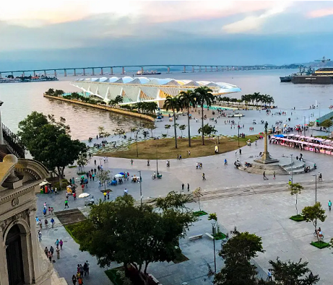
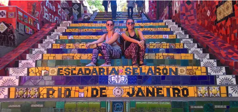
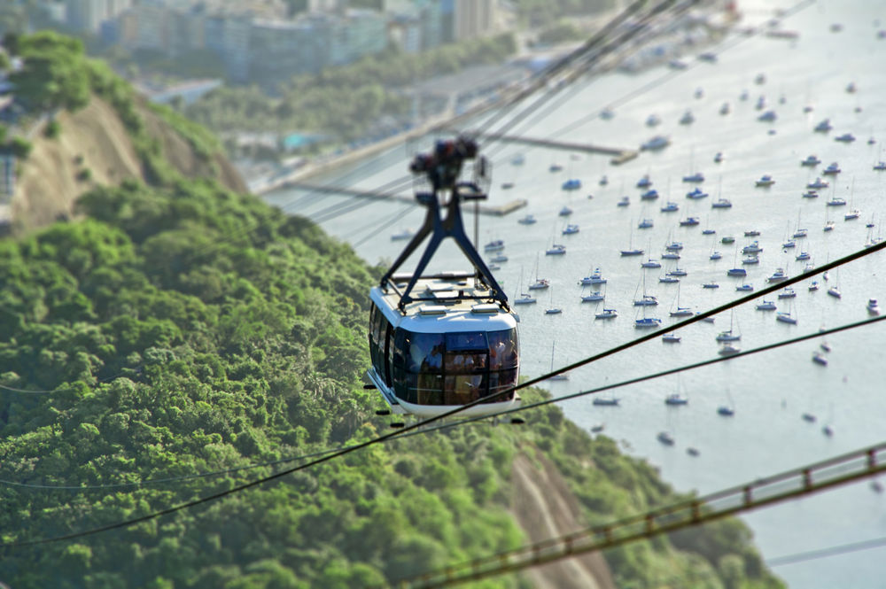

A região do Boulevard Olímpico foi toda revitalizada na época das Olimpíadas e oferece várias opções de lazer e cultura para quem visita o Rio de Janeiro.
Vida Sem Paredes
#ViagemComAdriana
Assine nossa Newsletters, e receba conteúdo exclusivos sobre Viagens!!!


Um bom passeio no Rio de Janeiro para quem quer conhecer a região boêmia é circular pela área central e conhecer pontos importantes como os Arcos da Lapa, o bairro Santa Teresa e a famosa Escadaria Selarón.

Quem ama futebol, com certeza, vai querer conhecer um dos estádios mais importantes do Brasil, o Maracanã.
O passeio clássico dos clássicos. O Cristo Redentor faz parte do elenco de Patrimônios da Humanidade da UNESCO e foi eleito uma das 7 maravilhas do Mundo Moderno, só ai já vale a visita.

Visitar o Pão de Açúcar através do bondinho é outro passeio imperdível no Rio de Janeiro. Quase obrigatória para quem passa pela cidade, a atração oferece uma vista panorâmica da Baía de Guanabara, além de um complexo turístico muito bem montado para recepcionar os visitantes.